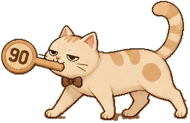

3D 미니 탐험판
집 안 거실에서 문을 지나 골목길까지.
구공이가 되어 직접 걸어 다니며
인간 여섯을 90점으로 채점한다.
가로·세로 모두 · 소리 켜면 더 좋다 · 기준은 고양이
오늘의 채점
남은 60점은 인간들이 알아서 채워 올 것.
채점은 여기까지.
거실에 2명, 골목길에 4명. 여섯 명을 모두 채점하면 오늘의 채점이 끝난다.
모두 90점인 이유는, 남은 10점이 인간 몫이라서다.